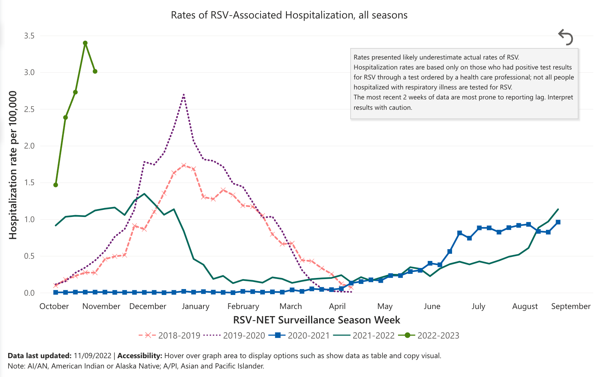

1 Introduction
Polynomial Regression for CDC data with Application for Predicting RSV in USA
1.1 Background
Respiratory Syncytial Virus (RSV) was discovered in 1956 and has since been recognized as one of the most common causes of childhood illness. RSV symptoms usually look like a common cold, but it can be serious, leading to bronchiolitis (inflammation of the small airways in the lung) and pneumonia, especially for infants and older adults.
According to the Centers for Disease Control and Prevention, RSV results in around 58,000 annual hospitalizations and 100 to 300 deaths among children under 5[1]. In most regions of the United States, RSV circulation starts in the fall and peaks in the winter. With mask-wearing and physical distancing for COVID-19, there were fewer cases of RSV in 2020. However, RSV cases began to increase in spring 2021 when safety measures relaxed with the arrival of COVID-19 vaccines. This year, RSV in multiple U.S. regions are nearing seasonal peak levels and is filling hospital beds. [2] It is unclear to anyone where RSV will lead us, a reliable prediction model for RSV data is very crucial for policymakers to implement fast actions to curb the spread of the infection, and for health system to get prepared not to be overburdened, and for infectious disease researchers to conduct further researches.

1.2 Literature Review
Respiratory syncytial virus (RSV) infection trend has gained many researchers’ concerns globally. Thongpan, Ilada etc. applied multivariate time-series analysis to show the possible prediction of RSV activity based on the climate in Thailand. [3] The other researchers to track RSV through internet search engine data. Oren, Eyal etc. highlights the use of search filters and domain adaptation techniques to assist in identifying spread of both local and more widespread RSV transmission where comprehensive epidemiological data is not easy to collect [4]. Manuel, Britta etc. applied logistic regression to develop a prediction model and developed a web-based application to predict the individual probability of RSV infection[5].
Furthermore, researchers are using different modeling approaches to predict the RSV trend. A research done by Reis, Julia etc. try to built a real-time RSV prediction system using a susceptible-infectious-recovered (SIR) model in conjunction with an ensemble adjustment Kalman filter (EAKF) and 10 years CDC data[6]. Bayesian stochastic susceptible‐infected‐recovered‐susceptible (SIRS) model is presented by Corberán-Vallet etc. to understand RSV dynamics in the region of Valencia, Spain. However, this continuous‐time deterministic model is not suitable when the initial number of infected individuals is small[7]. Leecaster, Molly etc. use simple linear regression to explore the relationship between three epidemic characteristics (final epidemic size, days to peak, and epidemic length) and exponential growth calculated from four weeks of daily case data. They find out exponential growth was correlated to epidemic characteristics[8].
1.3 Problem Statement
We have seen a dramatic growth of RSV cases this year, but there are not any articles founded yet to give prediction of the RSV cases now. Based on the previous researches and the curve of RSV data, we propose a new statistical regression tool—polynomial regression model — to investigate the dynamic of RSV in USA.